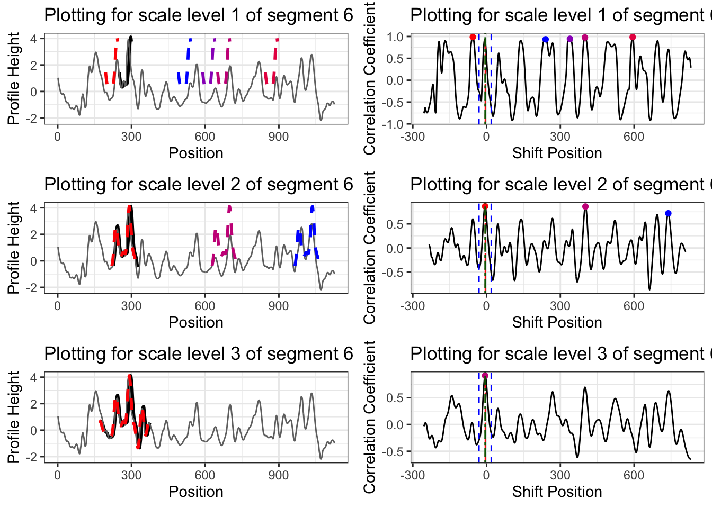

cmpsR

The cmpsR package is an implementation of the Congruent Matching Profile Segments (CMPS) method (Chen et al. 2019). In general, it can be used for objective comparison of striated tool marks, but in our examples, we mainly use it for bullet signatures comparison. The CMPS score is expected to be large if two signatures are similar. So it can also be considered as a feature that measures the similarity of two bullet signatures.
Installation
You can install the released version of cmpsR from CRAN with:
install.packages("cmpsR")And the development version from GitHub with:
# install.packages("devtools")
devtools::install_github("willju-wangqian/cmpsR")Example and Summary of the Algorithm
In this section we use a known match (KM) compasison (of two bullets) to illustrate the main ideas of CMPS algorithm and to showcase the cmpsR implementation.
The cmpsR package includes a simple data set of 12 bullet signatures generated from two bullets (each bullet has 6 bullet signatures). These bullet data come from the James Hamby Consecutively Rifled Ruger Barrel Study (Brundage 1998; Hamby, Brundage, and Thorpe 2009; Hamby et al. 2019), and the two bullets included in cmpsR are just a subset of Hamby set 252.
These bullet data in their original format can also be found in Chapter 3.5 of Open Forensic Science in R.
A comparison of two bullets is considered as a match if two bullets are fired from the same barrel (come from the same source). The gun barrel used in the Hamby study has 6 lands, and during the firing process striation marks will be engraved on the bullet by these lands. A bullet signature is a numerical representation of the striation marks engraved by a land. This is why each bullet can generate 6 bullet signatures. Two bullet signatures are a match if they are originally engraved by the same land in a gun barrel. Therefore, two bullets of a known-match comparison will have 36 pairwise bullet signature comparisons, and 6 of them are matching bullet signature comparisons while 30 of them are non-matching bullet signature comparisons.
Here we plot the twelve bullet signatures of the two bullets. The bullet signatures are aligned so that the top figure and the bottom figure of the same column are a matching bullet signature comparison.
To further illustrate the idea of the CMPS algorithm, let’s consider one matching bullet signature comparison: bullet signature of bullet 1 land 2 and bullet signature of bullet 2 land 3 (the second column), and compute the CMPS score of this comparison:
library(cmpsR)
data("bullets")
x <- bullets$sigs[bullets$bulletland == "2-3"][[1]]$sig
y <- bullets$sigs[bullets$bulletland == "1-2"][[1]]$sig
cmps <- extract_feature_cmps(x, y, include = "full_result")
cmps$CMPS_score
#> [1] 18And we have the plot of x and y.
(#fig:plot_example)A KM Comparison, x and y
Main Idea
The main idea of the CMPS method is that:
- we take the first signature as the comparison signature (
xor bullet signature of “2-3”) and cut it into consecutive and non-overlapping basis segments of the same length. In this case, we set the length of a basis segment to be 50 units, and we have 22 basis segments in total for bullet signaturex.
(#fig:plot_cut_x)Cut x into consecutive and non-overlapping basis segments of the same length. Only 4 basis segments are shown here
- for each basis segment, we compute the cross-correlation function (ccf) between the basis segment and the reference signature (
yor bullet signature of “1-2”)
(#fig:plot_y_and_seg)y and 7th basis segment
(#fig:plot_ccf_y_seg)the cross-correlation function (ccf) between y and segment 7
- for the
ccfcurve, thepositionrepresents the shift of the segment. A negative value means a shift to the left, a positive value means a shift to the right, and 0 means no shift (the segment stays at its original position in the reference signature); - we are interested in the peaks in the ccf curve and the positions of those peaks (as indicated by the red vertical line in the plot above). In other words, if we shift the segment, which position would give us the “best fit”?
- If two signatures are from a KM comparison, most of the basis segments should agree with each other on the position of the best fit. Then these segments are called the “Congruent Matching Profile Segments (CMPS)”.
Ideally, if two signatures are identical, we are expecting the position of the highest peak in the ccf curve remains the same across all ccf curves (we only show 7 segments here);

(#fig:plot_x_itself)ideal case: compare x to itself. The highest peak has value 1 and is marked by the blue dot
But in the real case, the basis segments might not achieve a final agreement, but we have the majority;
(#fig:plot_real_xy)real case: compare x to y. The 5 highest peaks are marked by the blue dots
We mark the 5 highest peaks for each ccf curve because the position of the “highest peak” might not be the best one.
- each ccf curve votes for 5 candidate positions, then we ask two questions in order to obtain the CMPS number/score:
which position receives the most votes? -> the best position (indicated by the red vertical line)
how many segments have voted for the best position? -> CMPS score
If we focus on these 7 segments only, and have a very short tolerance zone, the CMPS number is 6.
(If we consider all 22 segments, and have a default tolerance zone (+/- 25 units), the CMPS number is 20.)
- false positive: how can the segments vote more wisely? -> Multi Segment Lengths Strategy
by increasing the segment length, one can reduce the number of “false positive” peaks.
the first scale level is the original length of segment 7; for the second scale level, we double its length while keeping its center. That is, we include 25 more units from both the left and right side of the segment 7 to obtain a segment of 100 units length. For the third scale level, we double the segment length again to obtain a segment of length 200.
(#fig:plot_false_positive-1)Multi Segment Lengths Strategy - increasing the segment length could decrease the number of false positive peaks in ccf curves
(#fig:plot_false_positive-2)Multi Segment Lengths Strategy - increasing the segment length could decrease the number of false positive peaks in ccf curves
we choose five peaks at scale level 1; three peaks at scale level 2; one peak at scale level 3
the peak shared by all three scale levels is a consistent correlation peak (ccp). And the position of the ccp is our best choice. Sometimes a ccp might not be found. Trying to identify a ccp for each basis segment is called a “multi segment lengths” strategy.
The following plots (generated by
cmpsR::cmps_segment_plot) summarize the information of the two above plots. It shows that segment 7 finds a consistent correlation peak (ccp) at a position near 0 (position-6).cmps <- extract_feature_cmps(x, y, include = "full_result") cmps_plot_list <- cmpsR::cmps_segment_plot(cmps, seg_idx = 7) ggpubr::ggarrange(plotlist = unlist(cmps_plot_list, recursive = FALSE), nrow = 3, ncol = 2)In this case, since segment 7 identifies a ccp, it casts a vote for position
-6. Then we ask two questions:- which position receives the most votes (within a tolerance zone specified by
Tx)? - how many segments have voted for this position? -> CMPS score
- which position receives the most votes (within a tolerance zone specified by
by default, CMPS algorithm uses the multi-segment lengths strategy. Use
?cmpsR::extract_feature_cmpsto learn more about the function, including its default settings.
- If we follow the procedure described above (using the multi-segment lengths strategy) and investigate all 22 basis segments, we can find that 18 of them have cast a vote for position
0\(\pm 25\) (sinceTx = 25by default). Therefore, for this KM bullet signature comparison, the CMPS score is 18.
cmps <- extract_feature_cmps(x, y, seg_length = 50, Tx = 25,
npeaks_set = c(5, 3, 1), include = "full_result")
cmps$CMPS_score
#> [1] 18Segment 6 doesn’t cast a vote. Take a look at the following plot to find out why.
cmps_plot_list <- cmpsR::cmps_segment_plot(cmps, seg_idx = 6) ggpubr::ggarrange(plotlist = unlist(cmps_plot_list, recursive = FALSE), nrow = 3, ncol = 2)
It doesn’t identify a consistent correlation peak.
- If we have a KNM (known non-match) comparison, e.g. compare bullet signature 2-3 with 1-3:
land23 <- bullets$sigs[bullets$bulletland == "2-3"][[1]]
land13 <- bullets$sigs[bullets$bulletland == "1-3"][[1]]
cmps_knm <- extract_feature_cmps(land23$sig, land13$sig, seg_length = 50, Tx = 25,
npeaks_set = c(5, 3, 1), include="full_result")
cmps_knm$CMPS_score
#> [1] 2Full Comparison Between Two Bullets
extract_feature_cmps() can also be used in a pipeline fashion. The following code performs a full comparison of two bullets. That is, it evaluates all 36 pairwise bullet signature comparisons and computes the CMPS scores.
library(tidyverse)
library(cmpsR)
data("bullets")
lands <- unique(bullets$bulletland)
comparisons <- data.frame(expand.grid(land1 = lands[1:6], land2 = lands[7:12]),
stringsAsFactors = FALSE)
comparisons <- comparisons %>%
left_join(bullets %>% select(bulletland, sig1=sigs),
by = c("land1" = "bulletland")) %>%
left_join(bullets %>% select(bulletland, sig2=sigs),
by = c("land2" = "bulletland"))
comparisons <- comparisons %>% mutate(
cmps = purrr::map2(sig1, sig2, .f = function(x, y) {
extract_feature_cmps(x$sig, y$sig, include = "full_result")
})
)
comparisons <- comparisons %>%
mutate(
cmps_score = sapply(comparisons$cmps, function(x) x$CMPS_score),
cmps_nseg = sapply(comparisons$cmps, function(x) x$nseg)
)
cp1 <- comparisons %>% select(land1, land2, cmps_score, cmps_nseg)
cp1
#> land1 land2 cmps_score cmps_nseg
#> 1 1-1 2-1 2 23
#> 2 1-2 2-1 2 22
#> 3 1-3 2-1 1 21
#> 4 1-4 2-1 2 22
#> 5 1-5 2-1 2 23
#> 6 1-6 2-1 16 22
#> 7 1-1 2-2 3 23
#> 8 1-2 2-2 1 22
#> 9 1-3 2-2 1 21
#> 10 1-4 2-2 1 22
#> 11 1-5 2-2 2 23
#> 12 1-6 2-2 3 22
#> 13 1-1 2-3 2 23
#> 14 1-2 2-3 17 22
#> 15 1-3 2-3 3 21
#> 16 1-4 2-3 1 22
#> 17 1-5 2-3 1 23
#> 18 1-6 2-3 1 22
#> 19 1-1 2-4 2 23
#> 20 1-2 2-4 1 22
#> 21 1-3 2-4 14 21
#> 22 1-4 2-4 1 22
#> 23 1-5 2-4 1 23
#> 24 1-6 2-4 2 22
#> 25 1-1 2-5 1 23
#> 26 1-2 2-5 2 22
#> 27 1-3 2-5 1 21
#> 28 1-4 2-5 10 22
#> 29 1-5 2-5 1 23
#> 30 1-6 2-5 1 22
#> 31 1-1 2-6 2 23
#> 32 1-2 2-6 3 22
#> 33 1-3 2-6 1 21
#> 34 1-4 2-6 1 22
#> 35 1-5 2-6 15 23
#> 36 1-6 2-6 1 22The following plot summarizes the CMPS scores computed above.